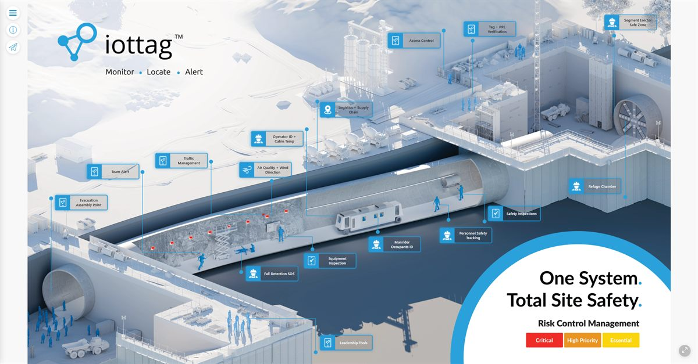
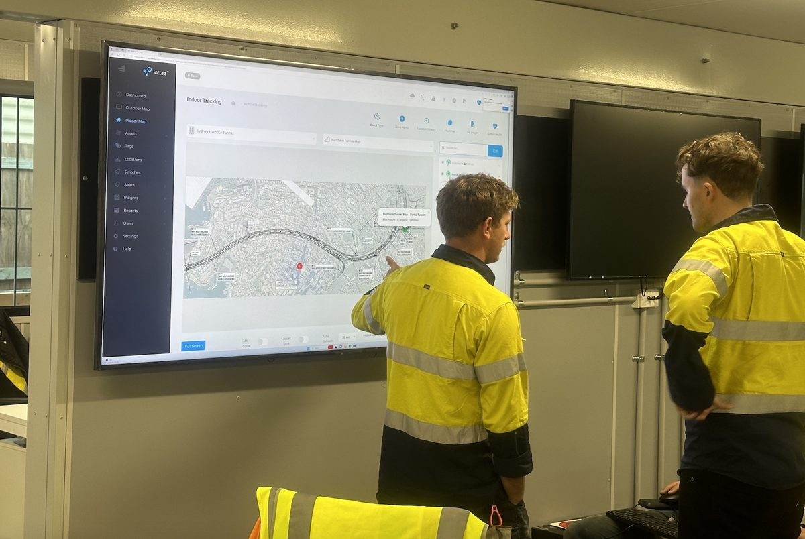
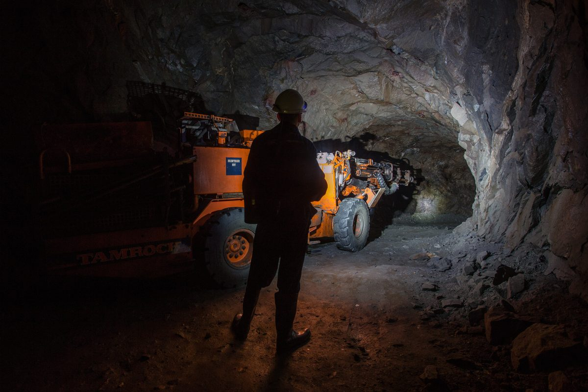

Articles & Insights
Perspectives On Operational Intelligence
Operations are becoming increasingly connected, data-rich and complex.
Our articles explore the technologies, operational challenges and emerging trends shaping the future of safety, productivity and operational performance.
Featured articles

Why Visibility Alone Is Not Enough
Learn More
Understanding The Operational Digital Twin
Learn MoreThe Future Of Fatal Risk Intelligence
Learn MoreUnderstanding Operational Complexity
Learn MoreAI-Powered Operational Understanding
Learn MoreOperational intelligence
Safety & Fatal risk
Production & performance

Industry insights
Our team includes engineers, operational specialists and technology experts with experience across:

Mining

Tunnelling
Construction & Infrastructure
Bridge Construction & Maintenance
Critical Infrastructure
Technology & engineering
Operational Digital Twins Explained
Learn MorePositioning Technologies Compared
Learn More
Industrial IoT At Scale
Learn More
IoT Security & Governance
Learn More
Engineering Operational Intelligence Platforms
Learn MoreExplore the future of operational intelligence
Read the latest perspectives, research and industry insights from the iottag team